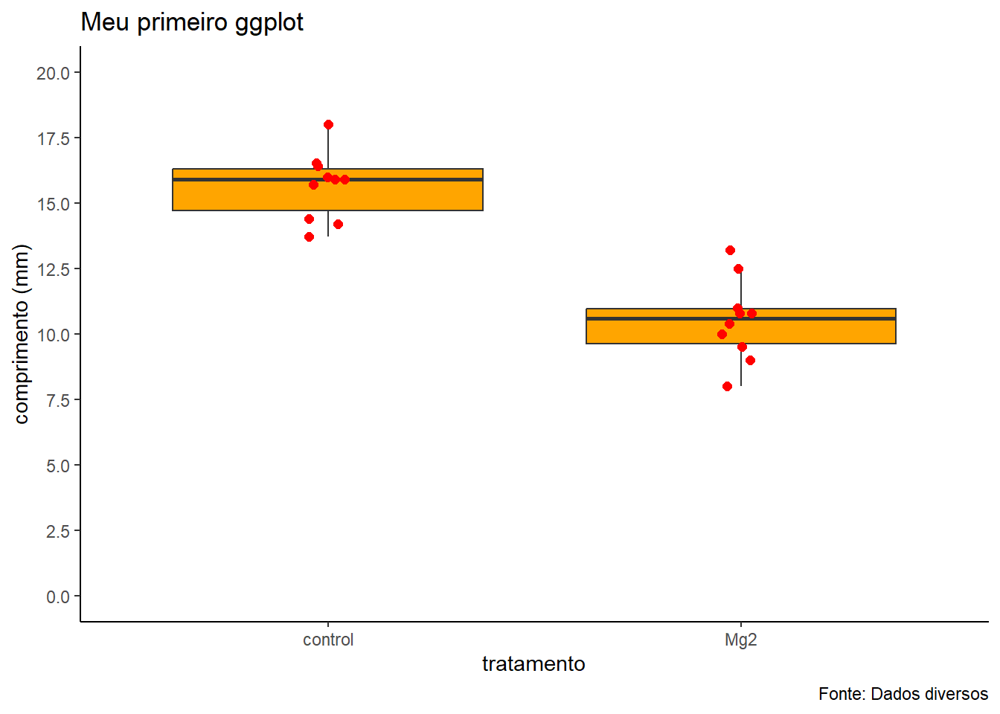

Los datos con los que se trabajará en R pueden provenir de diversas bases de datos, a continuación te mostraremos las formas de importar información de algunas de estas bases de datos.
Desde paquetes R
El propio R tiene una base de datos y se puede importar y trabajar con esta información. A continuación se muestra el conjunto de datos llamado “cars”.
#Atribuyendo "cars" a "cars2" se creo un data frame, que es de donde el trabajo comenzara
Cargar datos directos o importar datos al ambiente R en varias columnas o en data frame, es importante tomar en cuenta el tamaño del conjunto y el formato disponible de los datos
Alternativa 1: Usando el argumento text, usted puede cargar rapidamente datos del ambiente por medio del argumento text. Copiar (ctrl + c) los datos de una planilla y pegar (ctrl + v)
ImportanteLa h en la función read.table se refiere al argumento header, y cuando se escribe h=T o header=TRUE, se está indicando que la primera fila de los datos contiene los nombres de las columnas. Esto es útil cuando los datos tienen una fila de encabezado que describe el contenido de cada columna.
Ejemplo 1: Escribir entre comillas los datos, despues del argumento text, de la función read.table . Cada columna sera definida una vez que tenga espacio entre los elementos. Puede ser util para criar conjuntos pequeños de datos. Creación del conjunto survey desde una tabla de datos
Codigo
survey <-read.table (h=T, text="campo año severidade25 2010 325 2010 425 2010 1025 2010 2325 2010 3426 2010 226 2010 426 2010 5")# survey: Es el nombre del data frame en el que se almacenarán los datos leídos# read.table: Es la función que lee el archivo de texto.# header=TRUE: Indica que la primera fila del archivo contiene los nombres de las columnas#text="...": Proporciona directamente los datos como una cadena de texto en lugar de un archivo separado.##Verificar la estructura del conjunto creado con la funcion str str (survey)
'data.frame': 8 obs. of 3 variables:
$ campo : int 25 25 25 25 25 26 26 26
$ año : int 2010 2010 2010 2010 2010 2010 2010 2010
$ severidade: int 3 4 10 23 34 2 4 5
Alternativa 2 Importando datos de excel
Usualmente la mayoria del conjunto datos son creados en planillas electronicas y guardados en extensiones de excel como xls o xlsx. Algunos paquetes permiten importar archivos de excel. Entre esas funciones se destaca read_excel del paquete readxl
Ejemplo 2: De nuestra carpeta de archivos, importamos el archivo dados-diversos.xlsx y atribuir el data frame a df1. ES IMPORTANTE recordar que se debe incluir el camino del archivo caso el no se encuentre en el mismo directorio donde esta guardado el archivo .r o .rmd. Seleccionar los datos especificos de un conjunto de datos en .xlsx con diferentes sheet seleccionando los datos escala
Codigo
library(readxl)# carga el paquete en el ambientedf1 <-read_excel("dados-diversos.xlsx") # lectura con funcion read_excel creando el data frame df1df2<-read_excel("dados-diversos.xlsx", sheet ="escala") #lectura especifica de la hoja de trabajo en excel denominada *escala*df2
# A tibble: 20 × 7
assessment rater acuracia precisao vies_geral vies_sistematico vies_constante
<chr> <chr> <dbl> <dbl> <dbl> <dbl> <dbl>
1 Unaided A 0.809 0.826 0.979 1.19 0.112
2 Unaided B 0.722 0.728 0.991 0.922 -0.106
3 Unaided C 0.560 0.715 0.783 1.16 0.730
4 Unaided D 0.818 0.819 0.999 0.948 -0.00569
5 Unaided E 0.748 0.753 0.993 1.10 0.0719
6 Unaided F 0.695 0.751 0.925 0.802 0.336
7 Unaided G 0.807 0.823 0.981 1.16 0.132
8 Unaided H 0.781 0.869 0.898 1.07 -0.472
9 Unaided I 0.776 0.785 0.988 1.14 0.0888
10 Unaided J 0.618 0.834 0.740 0.652 -0.719
11 Aided1 A 0.907 0.949 0.955 0.894 -0.284
12 Aided1 B 0.913 0.959 0.952 0.892 -0.296
13 Aided1 C 0.915 0.963 0.950 1.28 0.212
14 Aided1 D 0.960 0.972 0.987 1.14 0.0891
15 Aided1 E 0.959 0.964 0.995 1.00 -0.0952
16 Aided1 F 0.903 0.973 0.928 0.860 -0.364
17 Aided1 G 0.851 0.954 0.892 0.828 -0.454
18 Aided1 H 0.880 0.974 0.903 1.29 0.385
19 Aided1 I 0.950 0.962 0.988 1.14 0.0706
20 Aided1 J 0.944 0.956 0.988 0.911 -0.126
Datos en otros archivos La disponibilidad de los datos puede estar en otros formatos como csv (comma separated values) o txt (texto). Estos archivos también pueden ser guardados en estos formatos, a partir de una planilla electronica ya elaborada.
Ejemplo 3: Vamos a utilizar la funcion read_csv del paquete readr.
Codigo
library(readr) # cargar el paquetedf3 <-read_csv("dados-diversos.csv") # importar el arquivo csvdf3
Datos en paquetes del programa R #En R vienen archivos de datos ya cargados en la inicialiazacion del programa, bastando apenas entrar con el nombre del archivo para atribuir los datos a un dataframe. La funcion data () muestra todos los archivos de datos y una breve descripcion. Puede visualizarlo con el nombre del archivo.
Ejemplo 4: vamos a cargar el conjunto de datos de Orange. El conjunto de datos no es cargado en el ambiente, mas es descrito. Además, generalmente los paquetes poseen datos para demostrar el uso de sus funciones. Vamos a cargar el paquete agricolae y visualizar el conjunto de datos con el nombre de ralstonia.
Codigo
data ()head(Orange) # head en R se utiliza para mostrar las primeras filas de un data frame
g3<-df4 |>ggplot(aes(trat, comp))+geom_boxplot(outlier.colour =NA, fill ="orange")+geom_jitter(width =0.05, color="red", size =2)+theme_classic()+labs(x="tratamento",y="comprimento (mm)",title ="Meu primeiro ggplot",caption ="Fonte: Dados diversos")+scale_y_continuous(limits =c(0,20),n.breaks =10)g3

Source Code
---title: "Importación de datos"format: htmleditor: visual---Los datos con los que se trabajará en R pueden provenir de diversas bases de datos, a continuación te mostraremos las formas de importar información de algunas de estas bases de datos.## Desde paquetes REl propio R tiene una base de datos y se puede importar y trabajar con esta información. A continuación se muestra el conjunto de datos llamado "cars".```{r}carscars2 <- carsspeed <- cars2$speedspeed#Atribuyendo "cars" a "cars2" se creo un data frame, que es de donde el trabajo comenzara ```*Cargar datos directos o importar datos al ambiente R* en varias columnas o en data frame, es importante tomar en cuenta el tamaño del conjunto y el formato disponible de los datos## Alternativa 1: *Usando el argumento text*, usted puede cargar rapidamente datos del ambiente por medio del argumento *text*. Copiar *(ctrl + c)* los datos de una planilla y pegar *(ctrl + v)**Importante*La h en la función read.table se refiere al argumento header, y cuando se escribe h=T o header=TRUE, se está indicando que la primera fila de los datos contiene los nombres de las columnas. Esto es útil cuando los datos tienen una fila de encabezado que describe el contenido de cada columna.*Ejemplo 1*: Escribir entre comillas los datos, despues del argumento text, de la función read.table . Cada columna sera definida una vez que tenga espacio entre los elementos. Puede ser util para criar conjuntos pequeños de datos. Creación del conjunto survey desde una tabla de datos```{r}survey <-read.table (h=T, text="campo año severidade25 2010 325 2010 425 2010 1025 2010 2325 2010 3426 2010 226 2010 426 2010 5")# survey: Es el nombre del data frame en el que se almacenarán los datos leídos# read.table: Es la función que lee el archivo de texto.# header=TRUE: Indica que la primera fila del archivo contiene los nombres de las columnas#text="...": Proporciona directamente los datos como una cadena de texto en lugar de un archivo separado.##Verificar la estructura del conjunto creado con la funcion str str (survey)```Alternativa 2 *Importando datos de excel*Usualmente la mayoria del conjunto datos son creados en planillas electronicas y guardados en extensiones de excel como xls o xlsx. Algunos paquetes permiten importar archivos de excel. Entre esas funciones se destaca *read_excel* del paquete *readxl**Ejemplo 2*: De nuestra carpeta de archivos, importamos el archivo *dados-diversos.xlsx* y atribuir el data frame a *df1*. ES IMPORTANTE recordar que se debe incluir el camino del archivo caso el no se encuentre en el mismo directorio donde esta guardado el archivo .r o .rmd. Seleccionar los datos especificos de un conjunto de datos en .xlsx con diferentes *sheet* seleccionando los datos *escala*```{r}library(readxl)# carga el paquete en el ambientedf1 <-read_excel("dados-diversos.xlsx") # lectura con funcion read_excel creando el data frame df1df2<-read_excel("dados-diversos.xlsx", sheet ="escala") #lectura especifica de la hoja de trabajo en excel denominada *escala*df2```Datos en otros archivos La disponibilidad de los datos puede estar en otros formatos como csv (comma separated values) o txt (texto). Estos archivos también pueden ser guardados en estos formatos, a partir de una planilla electronica ya elaborada.*Ejemplo 3*: Vamos a utilizar la funcion read_csv del paquete readr.```{r}library(readr) # cargar el paquetedf3 <-read_csv("dados-diversos.csv") # importar el arquivo csvdf3```Datos en paquetes del programa R #En R vienen archivos de datos ya cargados en la inicialiazacion del programa, bastando apenas entrar con el nombre del archivo para atribuir los datos a un dataframe. La funcion *data ()* muestra todos los archivos de datos y una breve descripcion. Puede visualizarlo con el nombre del archivo.*Ejemplo 4*: vamos a cargar el conjunto de datos de *Orange*. El conjunto de datos no es cargado en el ambiente, mas es descrito. Además, generalmente los paquetes poseen datos para demostrar el uso de sus funciones. Vamos a cargar el paquete *agricolae* y visualizar el conjunto de datos con el nombre de *ralstonia*.```{r}data ()head(Orange) # head en R se utiliza para mostrar las primeras filas de un data framelibrary(agricolae)data(ralstonia) # el conjunto ralstonia fue cargado al ambiente ``````{r}library (gsheet)df4<-gsheet2tbl("https://docs.google.com/spreadsheets/d/1bq2N19DcZdtax2fQW9OHSGMR0X2__Z9T/edit#gid=983033137")df4``````{r}library(ggplot2)g1<- df4 |>ggplot (aes (trat, comp))+geom_point()g1``````{r}g2<-df4 |>ggplot(aes(trat,comp))+geom_boxplot()+geom_jitter(width =0.05,color ="red",shape =2, size =3)g2``````{r}g3<-df4 |>ggplot(aes(trat, comp))+geom_boxplot(outlier.colour =NA, fill ="orange")+geom_jitter(width =0.05, color="red", size =2)+theme_classic()+labs(x="tratamento",y="comprimento (mm)",title ="Meu primeiro ggplot",caption ="Fonte: Dados diversos")+scale_y_continuous(limits =c(0,20),n.breaks =10)g3```